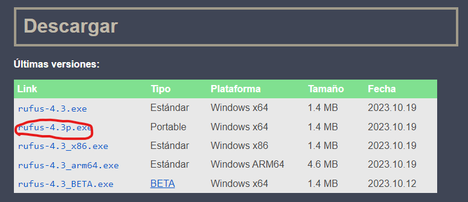
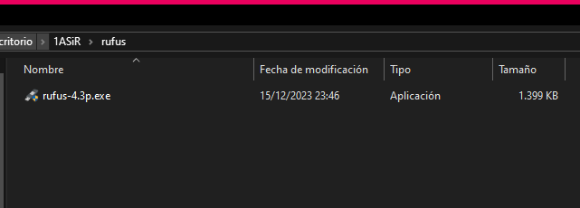
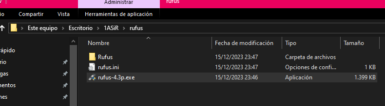

Rufus es una aplicación para creació de USBs de arranque para sistemas operativos.
Por última y cansina vez, vamos a acceder a su página oficial aquí.
Descargamos y ponemos en una carpeta QUE ESTÉ DENTRO DE LA CARPETA EN LA QUE LO QUERAMOS GUARDAR.
Por último, lo ejecutamos y cerramos, y habrá creado estos archivos en la carpeta, a partir de ahora lo podremos llevar en un usb sin problema.
Es una herramienta de formateo para unidades USB, es decir, puede ser utilizada incluso si no estás interesado en crear unidades de arranque.
Es útil para casos en los que necesitas crear medios de instalación USB a partir de ISOs arrancables.
Rufus es conocido por su velocidad en comparación con otras herramientas.
Es una herramienta específica para crear unidades USB multiboot, lo que significa que puedes tener varios sistemas operativos en una sola unidad USB.
YUMI te permite seleccionar entre varias distribuciones para poner en tu USB.
Sin embargo, algunos usuarios han informado de fallos ocasionales con YUMI.